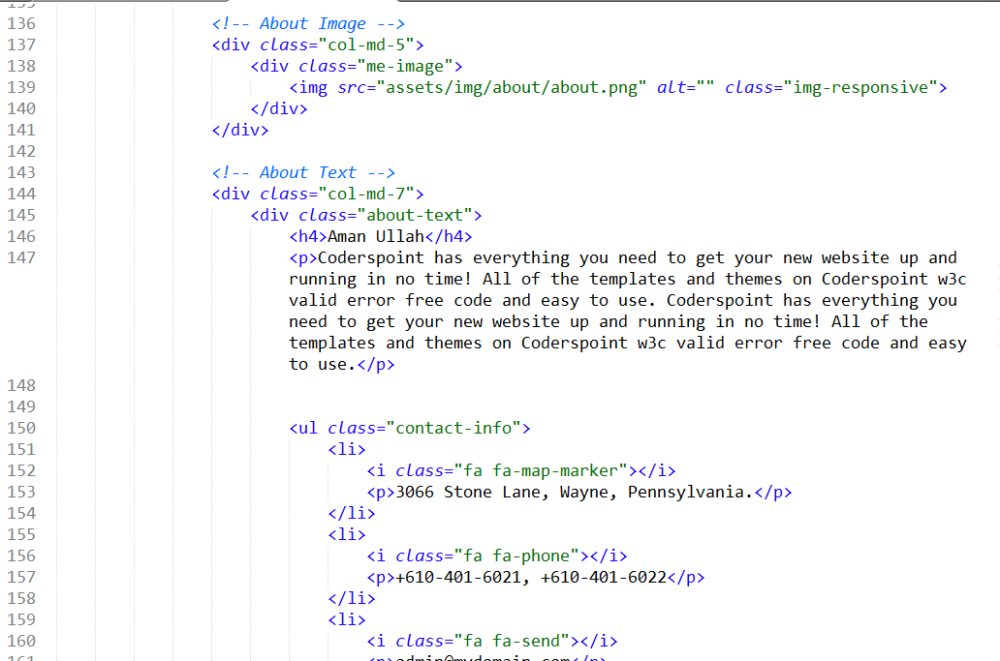
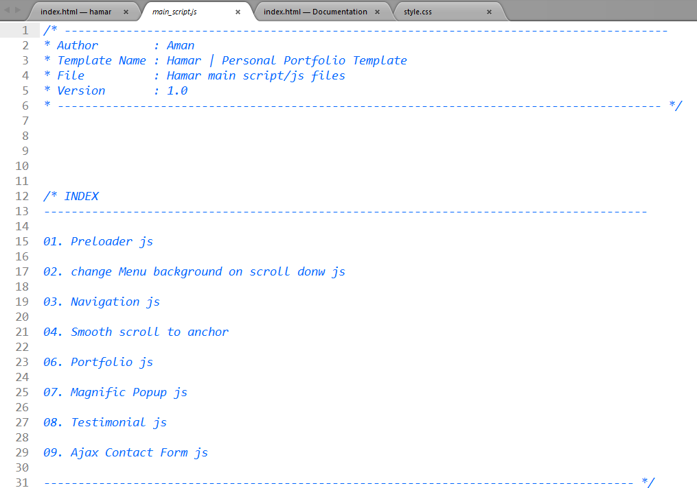
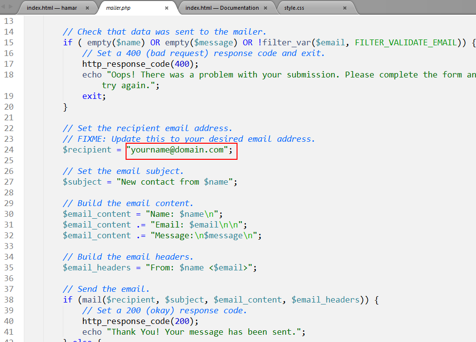

SHOWKES | Personal Portfolio Template Documentation by web_bean v1.0
SHOWKES | Personal Portfolio Template
Created: 16 Spetember 2017
By: Web Bean
amansdpr@gmail.com
Thank you for purchasing "SHOWKES Personal Portfolio Template". If you have any questions that are beyond the scope of this help file, please feel free to email via my user page contact form here. Thanks so much!
Table of Contents
A) Helpful Tips - top
- Do not start from scratch. Use an existing page that I have created and modify it in order to learn how it works.
- Quickly find what you're looking for in this document by using your browser's "Find in Page" feature. (Typically CTRL+F.)
- Trying to locate/replace text, styles or code in themes? The "find in files" command, which is commonly found in any decent text editor, will save you hours of searching
- Getting an error message? Chances are someone else has seen it too, try a Google search for a quick fix.
- Many times plugins are to blame when a site fails, always try disabling any third-party plugins if you encounter an error you can't solve.
- Don't forget to re-explore the live demo for layouts, usage ideas and sample code
B) HTML Code - top
This page is divided into three sections that house a navigation, template information, and template sections. This template uses the standard HTML5 markup.
The navigation can be found in the #top div as a unordered list. You can easily add as many quick links to your navigation by adding a list item. Make sure that the link has a matching anchor in your document.The template sections can easily be duplicated by copying the entire #section
C) CSS Style - top
We used some CSS files in this template (all styles're imported in main file of CSS - style.css). By using them, we can work around this. Those files also contain some general styling, such as anchor tag colors, font-sizes, etc. Keep in mind, that these values might be overridden somewhere else in the files below:
- style.css - main css files.
- responsive.css - media query layouts.
The below css files contain third party styles:
- bootstrap.min.css
- font-awesome.min.css
- magnific-popup.css
- normalize.css
- owl.carousel.min.css
- owl.theme.min.css
If you create your own styles you must check all the sizes of responsive so it all works ok. If you need to change your own styles to certain size you will do it in responsive.css.
Once again, thank you so much for purchasing this plugin. As I said at the beginning, I'd be glad to help you if you have any questions relating to this Plugin. No guarantees, but I'll do my best to assist. If you have a more general question relating to the Plugin on CodeGrape, you might consider visiting the forums and asking your question in the "Item Discussion" section.
C) JavaScript - top
We used some JavaScript files in this template. By using of them, we can work around this. Those files also contain some general effects, smooth scroll to anchor, lightbox, etc.
- jQuery - is a Javascript library that greatly reduces the amount of code that you must write. For more information, please visit http://www.jquery.com/
- MixItUp - Refer to the author's documentation for additional notes on how to use it.
- jquery.magnific-popup.min.js - Lightbox script
- owl.carousel.min.js - Carousel
- main_script.js - This is our custom script
You will find more scripts refered to previous ones at js folder like jquery.easing or jquery.mousewheel, to add new scripts you can use custom.js or create your own js
B) Set Your email to contact form - top
Open mailer.php on notepad and change as below the screenshot.
Once again, thank you so much for purchasing this item. As I said at the beginning, I'd be glad to help you if you have any questions relating to this Plugin. No guarantees, but I'll do my best to assist. If you have a more general question relating to this item on Themeforest, you might consider visiting the forums and asking your question in the "Item Discussion" section.
For questions on basic HTML, JavaScript or CSS editing - please give your question a quick Google or visit W3Schools as Template issues get top priority. You will need some knowledge of HTML/CSS to edit this Template.